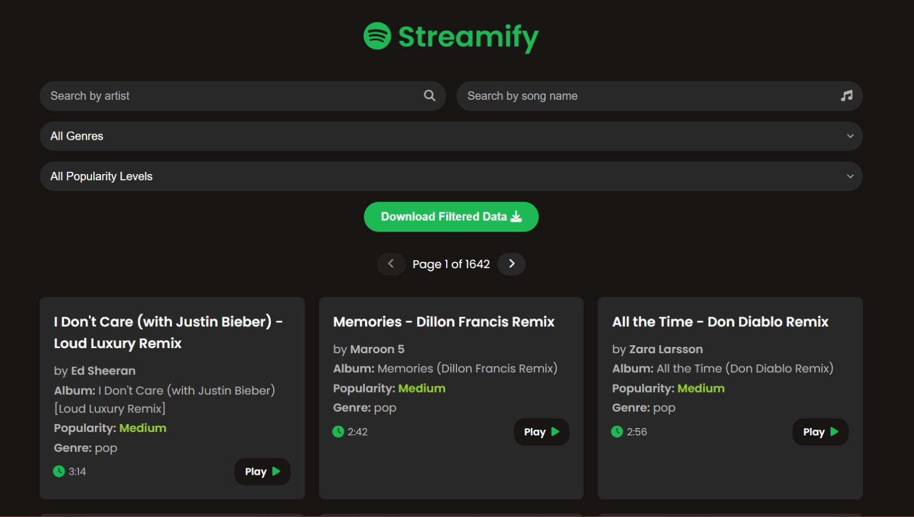
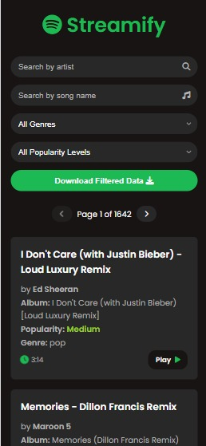
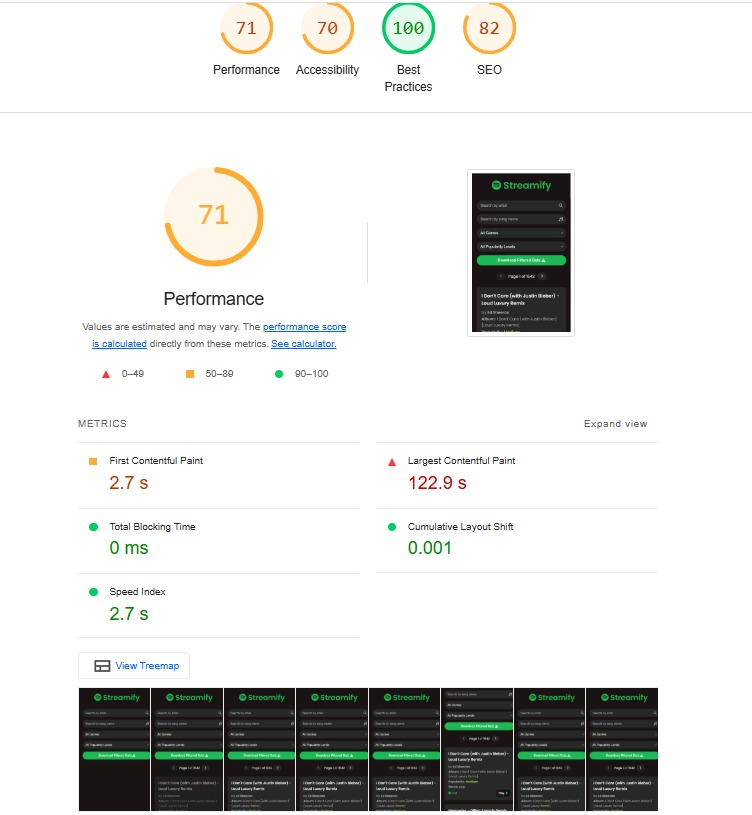
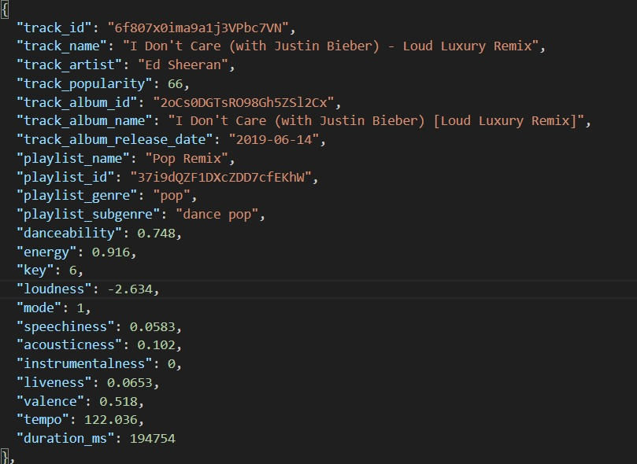

Exercise - 6: Basic Capstone Project
Approach
Structure and functionality process
- Look for a fitting data setfrom kaggle
- Convert csv to JSON using a tool from the browser
- Setup project environment
- Load and show data on the website from the imported JSON file
- Add search functionalities
- Select fields which would fit for filter
- Add filters
- Pagination on the website
- Using card to display each data
- Displaying usefull and information on each card
- All other functionalities like downloading filtered data as zip file
Note: It has a play button which directs you to the particular song
Styling
- Selecting a suitable color pallete. I have choosen spotify's color pallete because it suits the site I am building
- Choosing a style for card to show maximum information on the screen
- Suitable Layout for the website
UI/UX


Performance

CSV DATA (Spotify research data)
